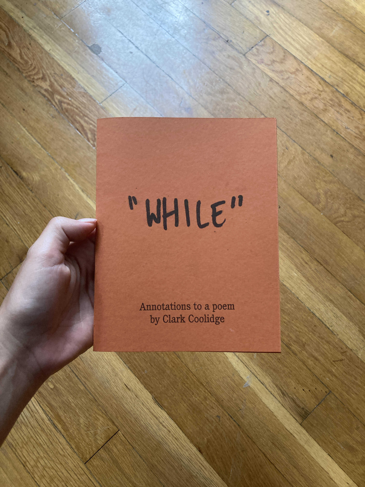
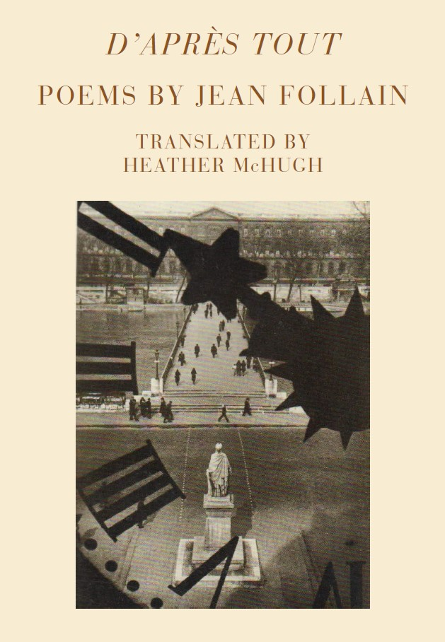

Summer 2021
In September (hopefully) I'll be putting out the first in the Annotations series. Annotations is a print project with diction as its connective tissue. For the first issue, twelve poets contributed work around the Clark Coolidge poem "While." It is my hope to continue the series throughout 2021-2022. I'll be updating this space with pictures and PDFs as I have them.

If you are interested in receiving the prompt for Issue 2, please let me know at ss3789990@gmail.com.
Spring 2021
D’après tout

"Jean Follain's D’après tout is quite simply a desert island book for anyone who wants to know why literary minimalism has a purpose. Follain would probably be shocked to be linked with minimalists, but he likewise never sat well with the surrealists. Most minimalism succeeds or founders on an immediate but limited path of associative analogy, but the best minimalism opens outward into a depth that bespeaks of poetic compression at its peak of perfection. Follain creates entire social systems, worlds, and dramas in ten to twenty lines. Comparisons might be drawn, in English, to Thomas Hardy or Phillip Larkin but these fall short of Follain’s genius for making the inanimate and non-human realms become present as things to be reckoned with. Hardy and Larkin show us how people interact with such things, but Follain makes things present in an ontological sense that I have never experienced in any other poet’s poetry. I have read other translations of Follain (I read no French) but McHugh’s translation of this book is the only one that I have creased, treasured, and come back to time and time again over almost 30 years. I hope that Princeton or another publisher will re-issue this absolutely essential book so that more poets could see what it can be like to be humble, chaste, and brilliant."
--Wil Halgren
Buy here.